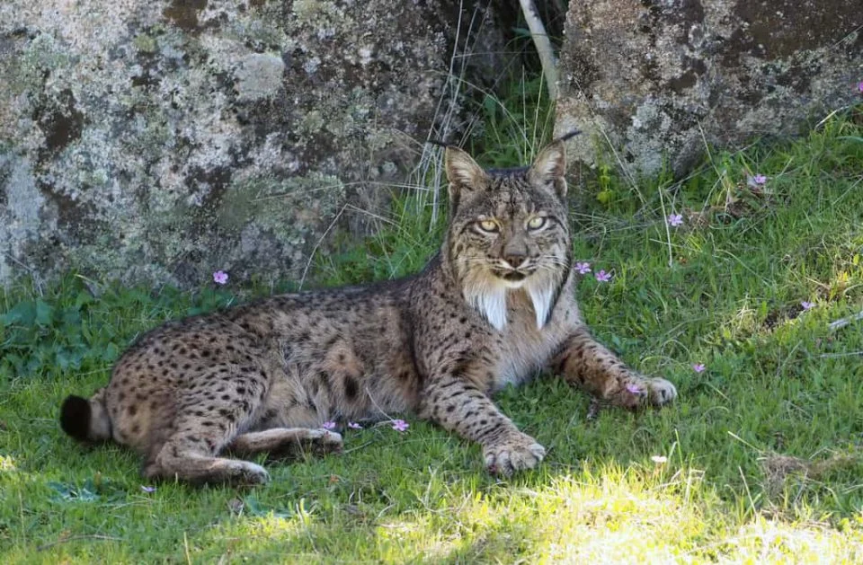
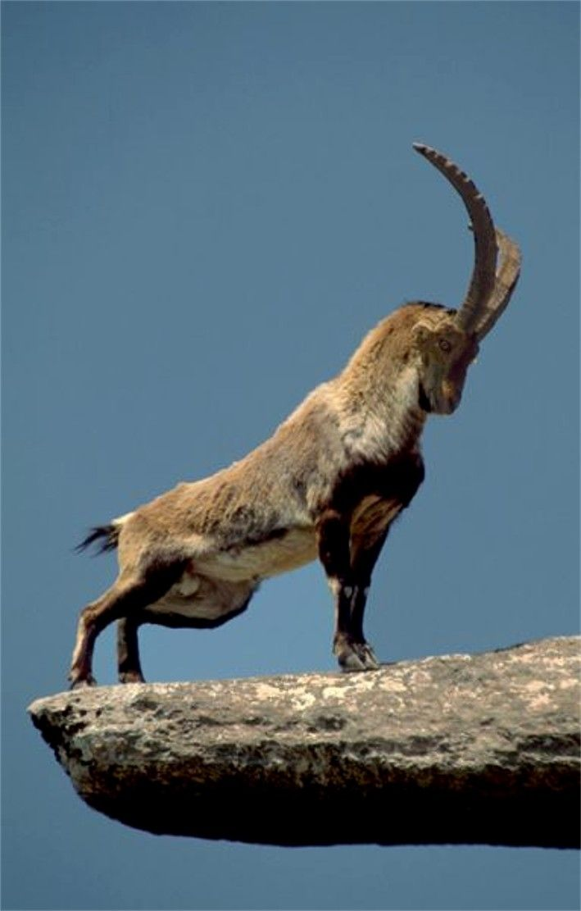

El buitre leonado es una de las aves carroñeras más emblemáticas de la Sierra de Cazorla, donde encuentra un hábitat ideal gracias a sus grandes extensiones montañosas y abundancia de alimento. Se trata de un ave de gran tamaño, con una envergadura que puede superar los 2,5 metros. Su plumaje es mayoritariamente pardo claro, con alas más oscuras y una característica cabeza cubierta de plumón blanquecino, adaptada para introducirse en los cadáveres sin ensuciarse. El cuello presenta un collar de plumas más claras que le da un aspecto distintivo En la Sierra de Cazorla, estos buitres suelen anidar en cortados rocosos y acantilados, formando colonias. Son excelentes planeadores: aprovechan las corrientes térmicas para volar durante horas sin apenas batir las alas, recorriendo grandes distancias en busca de carroña, su única fuente de alimento. Su papel ecológico es fundamental, ya que ayudan a eliminar restos animales y prevenir la propagación de enfermedades. Es bastante común observarlos sobrevolando el parque en grupos, especialmente en zonas abiertas o cerca de los llamados “muladares”, donde se depositan restos de animales para su alimentación. Su presencia es un indicador de la buena salud del ecosistema en esta región. El buitre leonado es una de las aves carroñeras más emblemáticas de la Sierra de Cazorla, donde encuentra un hábitat ideal gracias a sus grandes extensiones montañosas y abundancia de alimento.

El lince ibérico es uno de los felinos más amenazados y a la vez más emblemáticos de la península ibérica. De tamaño medio, presenta un cuerpo esbelto, patas largas y una cola corta con la punta negra. Su pelaje es de color pardo amarillento con manchas oscuras, que le proporcionan un excelente camuflaje en su entorno. Una de sus características más distintivas son los mechones de pelo negro en las orejas y una especie de “barba” o patillas a ambos lados de la cara, que le dan un aspecto inconfundible. Los adultos suelen pesar entre 10 y 15 kilos, siendo los machos algo más grandes que las hembras. Habita principalmente en zonas de monte mediterráneo con abundante matorral, donde encuentra refugio y alimento. Su dieta se basa casi exclusivamente en el conejo, lo que lo hace especialmente vulnerable a las enfermedades o disminución de esta presa.

El macho de cabra Montesa (Capra pyrenaica) en la Sierra de Cazorla es un bóvido robusto y experto escalador, reconocible por sus grandes cuernos rugosos en forma de lira que crecen hacia atrás. Destaca por su pelaje pardo-rojizo con manchas negras en cuello, patas y flancos, más intenso en invierno, y un gran dimorfismo sexual frente a la hembra. Este icónico habitante de riscos y zonas escarpadas, visible en Turismo de Observación y Instagram, exhibe una barba y una cornamenta persistente que no muda, diferenciándose de ciervos o corzos. Son animales gregarios que forman grupos de machos, con comportamientos de cortejo donde estiran el cuello y levantan la cola. Su capacidad para desplazarse por paredes casi verticales se debe a pezuñas con borde duro y almohadilla central blanda que actúan como ventosas. La subespecie presente es Capra pyrenaica hispanica, adaptada a las sierras andaluzas. La epoca de cria o partos de la cabra montesa ocurre principalmente entre abril y junio, con el pico maximo a finales de mayo. Las hembras suelen tener una cria (cervato),ocasionalmente dos,tras una gestació de unos 5 meses,pariendo en zonas escarpadas para protegerlas de deprededadores

La garduña ( Martes foina) es un mamifero carnívoro de tamaño medio (40-50 cm + cola) y gran agilidad, pariente de las comadrejas, caraterizado por una mancha blanca en el pecho y hábitos nocturnos. Es un depedrador oportunista y trepador que come rodeores, aves , frutas e insectos, viviendo en bloques , zonas rocosas y cerca de humanos .